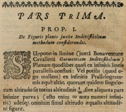
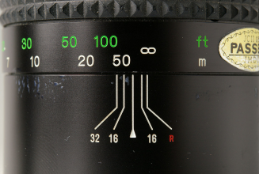
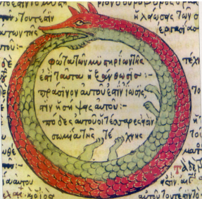
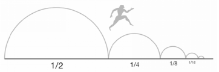
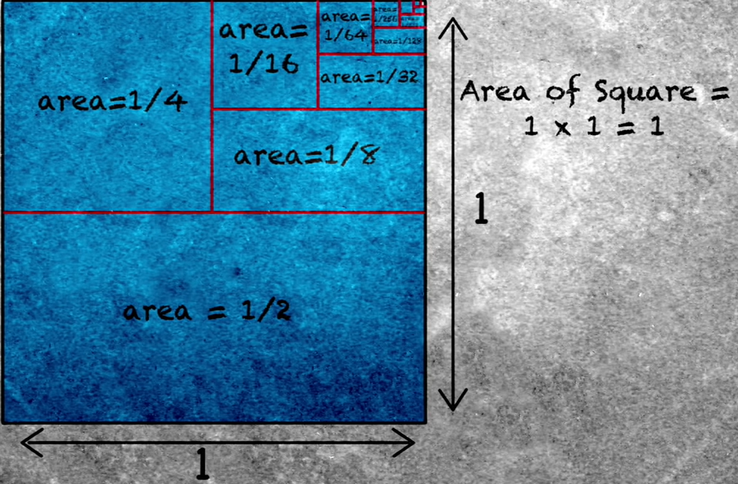

“What is the largest natural number possible?” At first glance, this question appears straightforward, but it leads to a journey into the enigmatic and endless regions of mathematics. Imagine counting numbers, starting from 1 and going on forever. Regardless of how far you count, there's always room to add one more. In this world of natural numbers, there is no endpoint, no ‘largest’ number to reach. This is the doorway to “infinity”.
The Infinity Symbol ∞
The infinity symbol (∞) is a mathematical symbol that represents the concept of infinity. Also known as a “lemniscate” or a “lazy eight”, this symbol has a rich history and is widely recognized across various fields. It was first introduced mathematically by John Wallis, an English mathematician, in the 17th century. However, its origins trace back even further. The lemniscate, a similar shape to the infinity symbol, has been a common decorative motif since ancient times, appearing on Viking Age combs and other artifacts. You can see an example above.
Figure 1: A comb with lemniscate decoration
The exact reason behind Wallis' choice of the infinity symbol remains unclear. Some theories suggest that it may have been based on a variant form of a Roman numeral or the lower-case form of omega, the last letter in the Greek alphabet. Regardless of its origin, the symbol quickly gained popularity and found its way into various fields beyond mathematics, such as bookbinding.
Figure 2: First known usage of the infinity symbol, by John Wallis in 1655
In mathematics, the symbol is commonly used to represent potential infinity rather than an actual infinite quantity. It often appears in expressions involving summations and limits, indicating that a variable grows arbitrarily large towards infinity. For example, the equation above represents the sum of a geometric series that converges to the value of 2. In bookbinding, it is used to indicate that a book is printed on acid-free paper, ensuring its longevity. On cameras and lenses, the infinity symbol signifies that the lens is set to focus at an infinite distance, one of the oldest symbols used in photography.

Figure 4: Side view of a camera lens, showing infinity symbol on the focal length indicator
In modern mysticism and literature, the infinity symbol has a deep metaphorical value. It is sometimes associated with the ouroboros, an ancient symbol of a snake eating its own tail that symbolizes the endless cycle of life and death. In works by authors like Vladimir Nabokov and James Joyce, the figure-eight shape of the infinity symbol is used to symbolize the infinite and the interconnectedness of different elements.
Figure 5: An ouroboros in a 1478 drawing in an alchemical tract
Zeno's Dichotomy Paradox
Now that we know more about the infinity symbol, let's shift our focus to the infinity paradoxes. The first paradox is Zeno’s Dichotomy Paradox. To illustrate this paradox, let's consider Zeno's journey from his house to the park. After a long day of contemplation, he decides to take a leisurely stroll. In the first leg of his journey, Zeno must reach the halfway point to the park, a task that consumes some finite amount of time. Once he arrives at this midway juncture, he faces another finite duration to traverse the remaining half of the distance. However, before he can complete that, Zeno encounters yet another division—this time, he must cross half of the remaining half. The cycle continues endlessly, with Zeno constantly dividing the distance into smaller and smaller segments, each demanding a finite amount of time. This repetitious process raises a perplexing question: How long will it take for Zeno to reach the park?
As simple as it may appear, the answer to the preceding question is that you will never reach the park. To top it all off, even if he tried an infinite number of times (infinity isn't a number, but for the purpose of argument, let's pretend it is), he'd still be unable to open the door. The simple answer is that each action brings him closer to the park, but the next one only covers half the distance covered by the previous steps. The steps he takes consequently never really close the gap. There’s also another neat piece of parlor logic that can be applied here, apart from the step method. In terms of time, an infinite number of things cannot be accomplished in a finite period of time; hence, Zeno cannot reach the park.
Let's look at the mathematical description of Zeno's stroll to help us solve the paradox. Assume Zeno's house is one mile away from the park and he walks at a constant speed of one mile per hour. Common sense dictates that the trip should take one hour. However, let us examine it from Zeno's point of view, breaking down the voyage into smaller chunks. We can see that the first half of the trip takes half an hour, the second half takes a quarter of an hour, the third part takes an eighth of an hour, and so on. These time intervals create an infinite series, with each term representing the time required to cross each distance segment. Zeno might argue that the total should be infinite because there are infinitely many terms on the right side of the equation and each term is finite.
However, here is where mathematics comes in handy. Mathematicians realized that it is feasible to add an unlimited number of finite-sized terms and still have a finite result. Consider a square with a one-unit area to demonstrate this. We divide the square into smaller sections repeatedly, like we did with Zeno's trip. Each division produces more parts, and as the process continues, the total area covered by these pieces approaches the complete area of the square. In mathematical words, when the number of divisions approaches infinity, the entire square becomes totally covered. Nonetheless, the square's area remains the same at one unit.
This method is similar to the infinite series that symbolizes Zeno's journey's time intervals. And, like with the size of a square, the infinite sum of these finite time intervals yields a finite value. It equals one hour in this situation. And the paradox is resolved by acknowledging the convergence of infinite terms to a finite value, aligning with our intuitive understanding of motion and time.
The Infinite Hotel Paradox
The brilliant German mathematician David Hilbert offered a compelling thought experiment—a paradox. If you will—to challenge our concept of infinity in the booming 1920s, enter the fascinating "Infinite Hotel," where numbers no longer behave as we expect them to. Imagine a hotel with an infinite number of rooms, each uniquely occupied by a guest. A seemingly insurmountable challenge awaits the night manager when an additional guest arrives, seeking lodging. Rather than turning the traveler away, this enterprising manager devises a plan to accommodate the newcomer. The manager's ingenious solution defies common sense yet is mathematically sound. He asks the guest in room number 1 to move to room 2, the occupant of room 2 to room 3, and so forth. Every guest relocates to the next room, effectively creating an opening in room number 1 for the new arrival. This process can be repeated for any finite number of newcomers, smoothly shuffling guests and ensuring each arrival finds a room.
But here's where things take a mesmerizing twist. Imagine an infinitely large bus, carrying an infinite number of passengers. The night manager faces an unparalleled challenge but remains undaunted. Through a brilliantly crafted strategy rooted in prime numbers, he assigns every existing guest a new room number based on powers of two, and each passenger on the bus a room number based on powers of subsequent prime numbers. Astonishingly, this meticulously designed plan opens up rooms for all passengers, leaving the hotel as bustling as ever. As word spreads of this extraordinary hotel, travelers from far and wide flock to the Infinite Hotel. Nights pass without incident until an unimaginable scenario unfolds—a procession of infinitely large buses, each carrying an infinite number of passengers, stretches into the horizon. What can the night manager do to prevent an infinite loss of revenue and secure his job? Remarkably, he invokes the timeless knowledge of Euclid, who, around 300 B.C.E., demonstrated the existence of an infinite quantity of prime numbers. Armed with this insight, the night manager assigns every current guest to the first prime number, 2, raised to the power of their current room number. So, the current occupant of room number 7 goes to room number , which is room 128. The night manager then takes the people on the first of the infinite buses and assigns them to the room number of the next prime, 3, raised to the power of their seat number on the bus. So, the person in seat number 7 on the first bus goes to room number or room number 2,187. While some rooms may remain unfilled due to their incompatibility with prime factors, the night manager's strategies prove successful. His job remains secure, thanks to a fundamental principle.
However, we must acknowledge that these structured strategies
would falter when confronted with higher orders of infinity, such
as that of real numbers.
 The "Real Number Infinite Hotel" would present an entirely
different set of challenges, featuring negative number rooms in
the basement, fractional accommodations, and even rooms named
after famous mathematical constants like π(pi).
The "Real Number Infinite Hotel" would present an entirely
different set of challenges, featuring negative number rooms in
the basement, fractional accommodations, and even rooms named
after famous mathematical constants like π(pi).
References
-
“Ambrosiani A2 combs with lemniscate (∞) decoration from
north-west European and Scandinavian settlements -
ResearchGate”, Jan, 2017. [Online]
Available: https://www.researchgate.net/figure/Ambrosiani-A2-combs-with-lemniscate-decoration-from-north-west-European-and_fig5_331073691.
[Accessed: 7 September 2023] -
“Infinity Symbol - Wikipedia”, August, 2023. [Online]
Available: https://en.wikipedia.org/wiki/Infinity_symbol.
[Accessed: 7 September 2023] -
“First known usage of the infinity symbol, by John Wallis in
1655 - Wikipedia”, March, 2022. [Online]
Available: https://en.wikipedia.org/wiki/Infinity_symbol#/media/File:First_known_usage_of_the_infinity_symbol.jpg.
[Accessed: 8 September 2023] -
“Side view of a camera lens, showing infinity symbol on the
focal length indicator - Wikipedia”, February, 2007. [Online]
Available: https://en.wikipedia.org/wiki/Infinity_symbol#/media/File:Infrarotindex_md_300_mm_IMGP1196.jpg.
[Accessed: 8 September 2023] -
“An ouroboros in a 1478 drawing in an alchemical tract -
Wikipedia”, February, 2007. [Online]
Available: https://en.wikipedia.org/wiki/Ouroboros#/media/File:Serpiente_alquimica.jpg.
[Accessed: 8 September 2023] -
“What is Zeno’s Paradox? - Science ABC”, July, 2022. [Online]
Available: https://www.scienceabc.com/pure-sciences/what-is-zenos-dichotomy.html.
[Accessed: 17 September 2023] -
“TED-Ed,What is Zeno's Dichotomy Paradox? - Colm Kelleher”, Apr,
2013. [Online Video]
https://www.youtube.com/watch?v=EfqVnj-sgcc.
[Accessed: 17 September 2023] -
"TED-Ed, The Infinite Hotel Paradox - Jeff Dekofskye”, Jan,
2014. [Online Video]
Available: https://www.youtube.com/watch?v=Uj3_KqkI9Zo.[Accessed: 17 September 2023] -
“HILBERT’S HOTEL PARADOX | So Curious”, March, 2006. [Online]
Available: https://soyoungsocurious.files.wordpress.com/2016/03/tumblr_nf1h4dmmyy1qmfh36o1_1280.jpg .
[Accessed: 17 September 2023] -
“Visual representation of Zeno's Dichotomy Paradox -
ResearchGate”, Nov, 2020. [Online]
Available: https://www.researchgate.net/figure/visual-representation-of-Zenos-Dichotomy-Paradox_fig4_346398398 .
[Accessed: 17 September 2023]
{kind=link}
{kind=link}
{kind=link}
{kind=link}